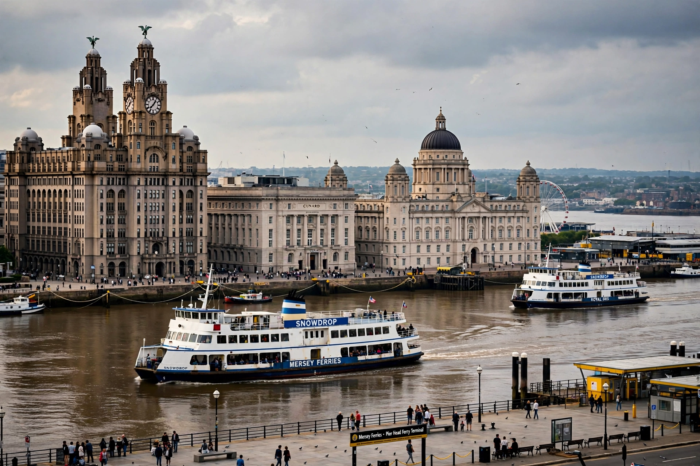

River Mersey

| River Mersey | |
|---|---|
| Length | 112 km (70 mi) |
| Source | Confluence of the Tame and Goyt at Stockport |
| Mouth | Liverpool Bay, Irish Sea |
| Basin size | approx. 4,680 km² |
| Settlements | Stockport, Warrington, Runcorn, Widnes, Birkenhead, Liverpool |
The River Mersey is a major river in North West England. It is formed in Stockport, Greater Manchester, by the confluence of the River Tame and the River Goyt, and flows westwards for about 112 kilometres (70 miles) through south Manchester, Warrington, Runcorn and Widnes before widening into a large estuary and entering Liverpool Bay on the Irish Sea between Birkenhead and Liverpool.
Course
From Stockport the river flows through Didsbury and Stretford, forms much of the historic boundary between Lancashire and Cheshire, and is joined by the Irwell near Irlam. The Manchester Ship Canal, opened in 1894, follows and in places replaces the lower course of the Mersey and Irwell, allowing ocean-going ships to reach Manchester. Below Warrington the river becomes tidal and broadens into the Mersey Estuary, flanked by the Wirral Peninsula to the south and Liverpool to the north.
Crossings
Important crossings include the Mersey Gateway Bridge and Silver Jubilee Bridge at Runcorn, the two road tunnels (Queensway and Kingsway) and the Mersey Railway tunnel between Liverpool and Birkenhead, and the famous Mersey Ferries.
History and culture
The Mersey was central to the growth of Liverpool as a port and to the Industrial Revolution in the North West. In the 1960s the "Merseybeat" sound of bands such as The Beatles took its name from the river, and Gerry and the Pacemakers' song "Ferry Cross the Mersey" became an anthem of the city.
Pollution and recovery
Once heavily polluted by industrial and sewage discharge — famously described as one of Europe's most polluted rivers — the Mersey has recovered dramatically since the 1980s through clean-up programmes led by the Mersey Basin Campaign; salmon and other wildlife have returned to the river system.